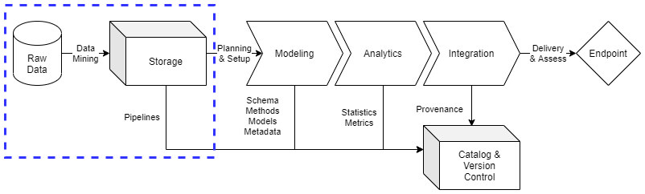

Storage#
Storage of data assets remains a critical challenge area. Data assets are maintained in varying formats across different architectures within multiple systems. These dimensions require consistent cataloging and documentation practices, ensuring metadata curation and searchability. These challenge areas require consideration of what to store, how to store it, and what archival practices are required to facilitate efficient starts and stops in the data lifecycle.
ciuTshi suggests a simplified storage system to ensure secure and consistent inter-system compliance. Such a system will create a stable foundation for data management practices such as lifecycle management. Tasks such as delineating raw and processed data within rigorous storage guidelines enables essential research practices such as sampling and exploratory data analysis (EDA). This simple, consistent, and rigorous system of storage promotes utilization of data asset documentation and artifacts for stakeholder insight and customer metrics. This produces a lifecycle management paradigm grounded in contextualized data asset classes for an enriched approach to data operations.
This document outlines essential data storage practices, directing data engineers in the implementation of simple and effective data storage architectures. ciuTshi’s data management practices draw from DAMA[1] and other resources. For additional context on this document’s sections, refer to the references section.
Challenge#
Institutions invest heavily into data assets with a number of technologies and industry partners. As a result, organizations require an array of data and technical support systems to maintain the utilization of those assets. These data assets must provide internal customers the opportunity to access and explore data holdings, encouraging reuse of those assets within a shared system of best practices from acquisition to archive. Institutions also require an enhanced requirements system to drive data storage within consistent data lifecycle management. To these ends, the accuracy and consistency by which data is stored and structured is critical for enabling innovative products and services. Tasks such as production of consistent data type standards, formatting, metadata, and documentation enable rigorous planning, optimization of modeling, and delivery of data assets to internal customers and stakeholders.
Goals#
Enable consistent data lifecycle management through observance of storage best practices across multiple data systems
Maintain data integrity of stored data through modularizing practices that are applied consistently, implemented rigorously, and documented for reuse and exploratory analysis
Optimize data asset performance through a grounded storage system which integrates into larger data operations practices while minimizing interruptions within data management practices
Processes#

Preliminary Tasks#
Security and System Compliance#
Refer to the security and content management documents for guidance and templating of data asset storage content. This should cover considerations on data security and guiding policies.
Role and Responsibilities#
These are the roles currently associated with data storage practices:
Data Manager
Deputy Data Manager
Project Manager
Legal Counsel
Project Lead
Data Management Team
Project Team
Data Engineers
Data Owners
Data Stewards
Trusted Transfer Agent
Refer to your institution’s policy (if present) as these roles and their definitions may change depending on organization structure, system access, and team compositions.
Lifecycle Management#
Lifecycle management for data storage focuses on maintaining the integrity of the raw data assets and their associate processes. This maintenance ensures optimizations can be pursued to enable improvements in the performance and quality of the data assets throughout its lifecycle. Consistent storage practices observe system-specific security requirements as dictated by institutional policy and data customer agreements. For additional details on essential data quality practices and requirements, please refer to the quality assurance document.
Data Acquisition#
Prior to acquiring new data, data management should check existing data assets to ensure that there is no duplication of effort. This is ideally performed using the data catalog which should hold all data assets known to an institution and their associated data artifacts. If the new data does not exist, clear requirements must be drafted to ensure the acquisition is aligned with the institution’s mission and goals. The new data requester will gather additional documents to ensure lifecycle planning is implemented in accordance to customer requirements. The requester will then submit this information to initiate the data management system for data product and service delivery.
Data Load and Access Forms#
Once all documents and requirements are established from the acquisition phase, the requestor of the raw data asset will complete the data load and data access forms. These forms control and refine storage and security standards:
Load Forms direct the loading of new data to specified data systems.
Access Forms track requests to view and use raw data including assets held and maintained for previously approved projects.
These standards, along with metadata and documentation, facilitate the data modeling and delivery practices that will proceed the data load and access form approvals. Data load and access forms are fundamental in the transfer of data between different systems, making them instrumental in securing data in accordance with institutional policy, data provider guidance, and customer agreements. Copies of the approved forms will be stored along with the raw data as artifacts for later analysis and exploration.
Loading Data#
Once the data request is assessed, required documents are obtained, and data load or access form is completed and approved, the data management team will proceed with loading the data. The team will setup task management and version control resources as outlined in task management and version control documents. Once setup, the data engineers will identify the technical requirements for loading the data into storage, structuring these tasks in the task management tools for sprints. Once sprints begin, the data management team will build pipelines based on the delivery medium for the raw data assets.
Data Mining#
Commercially-available data is a predominant class of raw data asset. Obtaining external or raw data from a variety of data providers or endpoints may be required to bring data assets into an institution’s multiple data architectures. Data mining covers the methods and code required to interact with the organizations, people and technical infrastructure associated with extraction and loading of raw data from a data owner. Notes on these data artifacts will constitute portions of the metadata and version control contributions for a particular data asset.
Pipelines#
Expanding on the concept of data mining, pipelines constitute the technical models, tools, and code used to get data assets from the delivery medium to raw data storage location on an identified data architecture (per the data load or data access form requirements). The model documentation and/or code must be version controlled.
Trusted Transfer Agent (TTA)#
The TTA authorized personnel ensure that data assets are appropriately staged and reviewed prior to loading onto the identified data architecture. Their responsibilities include completion, review, and approval of a TTA security forms (e.g., load and access forms) prior to loading the data from its staging area onto the required data architecture.
Note
TTA forms will be maintained in accordance with institutional policy.
Data Storage#
Data assets have an expiration date whether through the need for refresh of reference data or obsolescence of more specific project data. Data management personnel should persistently observe and maintain adherence to policy and guidance on the lifecycle for data assets, ensuring stored data is required and that deprecation and archival actions are executed when necessary.
Data storage is data architecture specific. Institutions may have multiple systems, each with unique requirements for data storage, access, and utilization. As a result, the data management team must ensure tracking of assets across these systems, maintaining parity across data catalogs and raw data storage holdings. In all cases, forms and essential documentation should be co-located with raw data assets to enable simplified review and lifecycle actions.
Raw Data#
ciuTshi suggests a modular, data-processing approach to data management. This means that only raw data assets are held in state for any prolonged period of time: all data endpoints have a deprecation date. Raw data must be reviewed, refreshed, deprecated, or archived based on established requirements and guidance from the data governance board.
Mastered Data#
Mastered data will be preserved in two forms: data endpoints and data samples. The raw data will be used to produce a data endpoint per customer requirements for the specified lifecycle of the endpoint. This may be a database, API implementation, or any number of data architecture-specific tools. Mastered data must also be sampled for inclusion in the data catalogs per data management specifications and policy.
Naming Standards#
In order to maintain parity across system and data architectures, there must be baseline naming and tagging standards. These standards encourage consistent metadata and documentation for data assets, maximizing the data management teams ability to ensure ROI for a particular data assets and its associated utilities.
Directory Structures#
At the top-level of the storage structure, certain nomenclature practices must be observed:
Nomenclature
d - datasets, e.g. “d-wipo”
a - applications, e.g. “a-looker”
u - users, e.g. “u-last_first”
p - projects, e.g. “p-emissive”
Within these top-level folders, there are several sub-folders with specific functions:
data_load_access - Contains copies of the data load and data access forms.
data_documents - Contains any documents provided by customers or data providers that act as source information for data cataloging and metadata elements
Note
These may vary based on the data asset: adapt the Naming Standards section as needed.
Change Implementation#
Following the initial extraction and loading of raw data into a data architecture for modeling and integration, the customer may shift requirements for the data assets currently being stored. The customer must present an addendum to the their original requirements detailing what changes are needed with timelines and shifts in integration. Once requirements are approved and documented, task management will then plan for implementation of the changes. These changes must be noted in the raw data storage areas, data catalog metadata and sample holdings, and version control system for any model, code, or tool shifts.
Retention, Expiration, and Disposition#
Once the data management team has fulfilled all requirements for endpoints, they will shift to monitoring the data assets for retention, expiration, and disposition. Retention of data requires additional guidance and documentations to shift the raw data holdings into reference data status for persisted storage and maintenance. Expired data is to be deleted from the storage area. However, the documentation, forms, and other data artifacts surrounding the raw data are to be maintained unless otherwise specified. Lastly, some raw data may be stored and maintained for longitudinal study. These data sets are to be archived through specified disposition instructions, shift them from more readily accessible data storage locations into compressed archival data stores. These archives must comply with security policies in place for the institution and their associate data architectures.
Quality Assurance#
Refer to above sections and the quality assurance document for additional details and policy on quality standards and considerations.